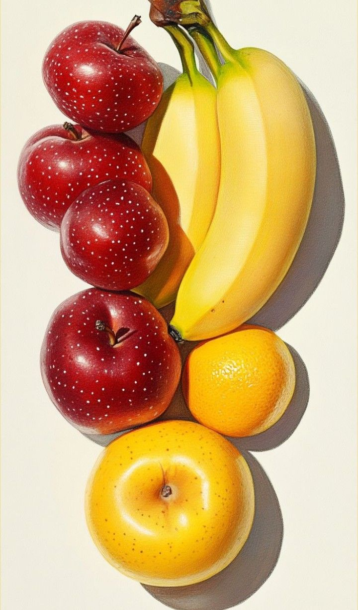
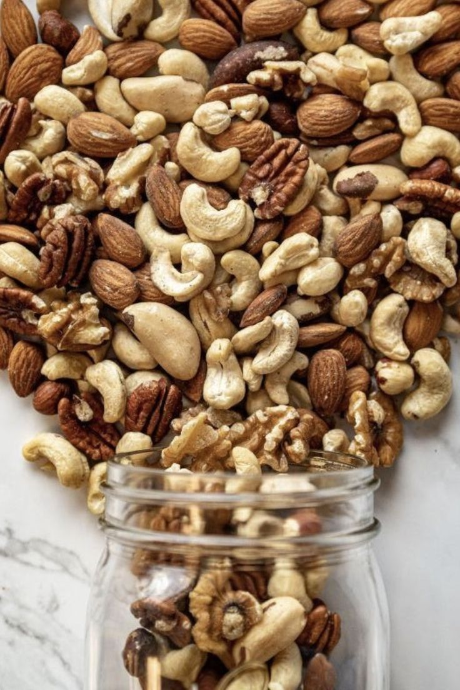

The Thyroid gland is a small, butterfly-shaped gland located in the front of the neck, just below the Adam's apple. It is part of the body’s Endocrine system and produces hormones such as Thyroxine and Triiodothyronine, which regulate metabolism, energy levels, heart rate, and body temperature. When the thyroid produces too much or too little hormone, it can lead to disorders like Hyperthyroidism or Hypothyroidism, affecting overall health. Proper thyroid function is essential for growth, development, and maintaining the body’s metabolic balance.

